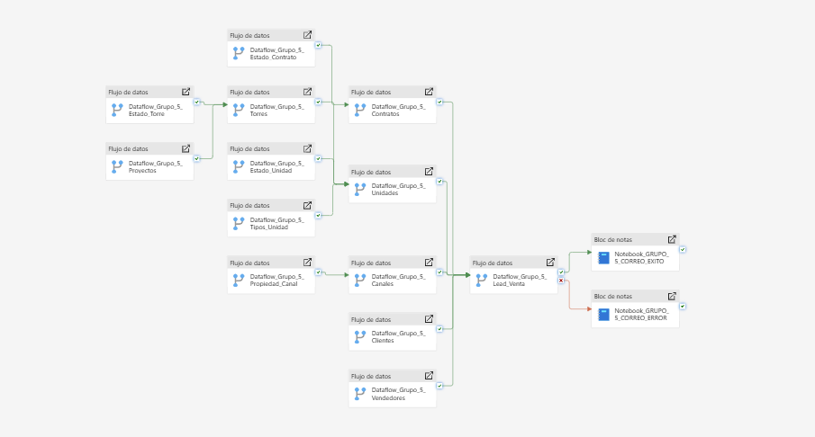
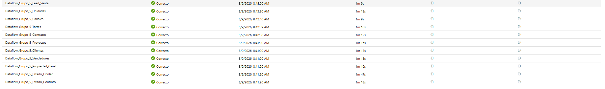
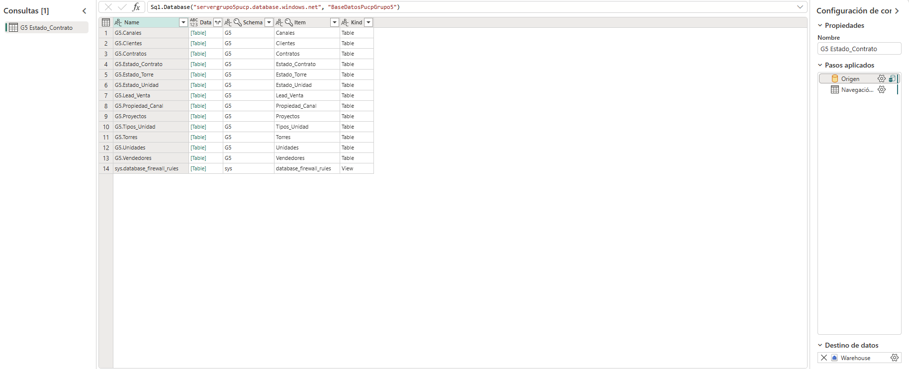
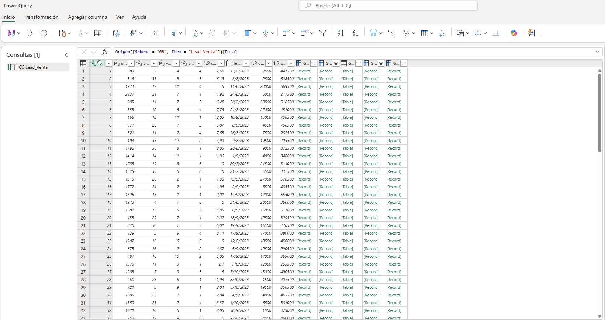
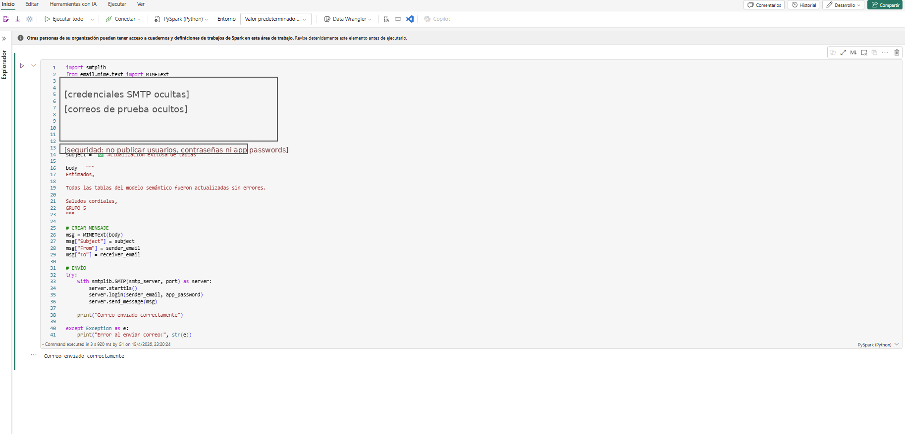
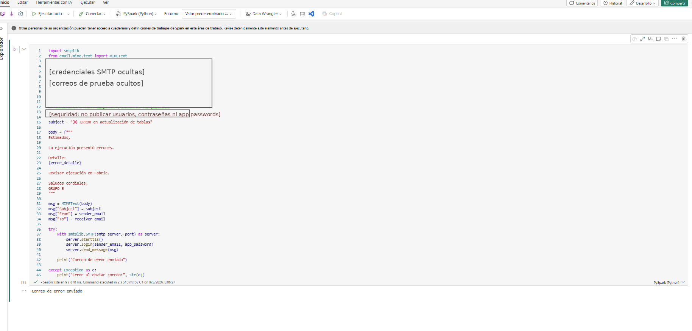

Pipeline de extracción, transformación y carga
La capa ETL permite trasladar la información comercial desde la base operacional hacia un entorno analítico en Microsoft Fabric. Para ello, se construyó un pipeline compuesto por múltiples dataflows, donde cada flujo procesa una tabla específica del modelo relacional de Inmobiliaria Mayo.
Extracción
Lectura de tablas comerciales almacenadas en Azure SQL Database, incluyendo proyectos, torres, unidades, clientes, vendedores, canales, leads y contratos.
Transformación
Preparación de los datos mediante Power Query / Dataflows, respetando nombres de campos, tipos de datos, llaves y dependencias entre entidades.
Carga
Envío de las tablas procesadas hacia Fabric Warehouse, para su posterior integración con el modelo analítico y los dashboards en Power BI.
Vista general del pipeline
El pipeline fue construido como una secuencia de flujos de datos. Primero se cargan los catálogos y entidades base, luego las tablas dependientes, y finalmente las tablas transaccionales que concentran el proceso comercial. Esta lógica reduce errores de carga y conserva la consistencia del modelo relacional.

Pipeline ETL desarrollado en Microsoft Fabric Data Factory para la carga secuencial de tablas del modelo comercial inmobiliario.
Ejecución final validada
Como evidencia final del proceso, se registró la ejecución aprobada del pipeline, donde los dataflows principales del modelo aparecen con estado Correcto. Esta validación confirma la carga exitosa de entidades como Lead_Venta, Unidades, Canales, Torres, Contratos, Proyectos, Clientes, Vendedores, Propiedad_Canal, Estado_Unidad y Estado_Contrato.
Resultado
Los flujos de datos fueron ejecutados correctamente y quedaron disponibles para alimentar el Warehouse y el modelo semántico.
Tiempo de ejecución
La ejecución muestra tiempos controlados por dataflow, con cargas de aproximadamente uno a dos minutos según la tabla procesada.
Impacto
La solución queda lista para actualizar dashboards y reportes sin depender de procesos manuales de carga.

Evidencia final de ejecución del pipeline: dataflows principales completados con estado Correcto.
Dataflows implementados
Cada dataflow cumple la función de extraer una tabla específica desde la base relacional, navegar hacia el objeto correspondiente y configurar su destino en Fabric Warehouse. Para documentar la lógica del proceso, se muestran dos ejemplos: un catálogo simple y la tabla transaccional principal del modelo.
Dataflow de catálogo: Estado_Contrato
Este flujo evidencia la conexión con Azure SQL Database, la navegación hacia la tabla G5.Estado_Contrato y el destino configurado en Warehouse. Representa una carga de catálogo usada para clasificar el estado y vigencia de los contratos.
Dataflow transaccional: Lead_Venta
Este flujo procesa la tabla central del funnel comercial. En ella se integran el cliente, unidad de interés, asesor asignado, canal de origen, fecha del lead, costo, descuento ofrecido y precio de venta ofertado.

Dataflow de la tabla G5.Estado_Contrato: conexión a Azure SQL, navegación hacia la tabla fuente y destino en Fabric Warehouse.

Dataflow de la tabla G5.Lead_Venta: vista previa de los registros de la tabla transaccional principal del proceso comercial.
Flujo lógico de procesamiento
Catálogos base
Se cargan tablas de referencia como estados, tipos de unidad y propiedad del canal.
Entidades inmobiliarias
Se procesan proyectos, torres y unidades, respetando la relación entre proyecto, torre y unidad.
Entidades comerciales
Se cargan clientes, vendedores y canales, que explican el origen y gestión de cada oportunidad.
Tabla central
Se procesa Lead_Venta como núcleo transaccional del funnel comercial.
Control de ejecución
Se activan notebooks para notificar el resultado del proceso: actualización exitosa o error.
Notebooks de notificación
Además de los dataflows, el pipeline incorpora notebooks en Fabric para comunicar el estado final de la ejecución. Se implementaron dos rutas: una para notificar una actualización exitosa de las tablas y otra para notificar errores en caso falle alguna etapa del proceso.
Correo de éxito
Envía una notificación cuando todas las tablas del modelo semántico fueron actualizadas sin errores. Esta evidencia permite demostrar el uso de Python dentro de Fabric para tareas operativas posteriores a la carga.
Correo de error
Envía una notificación cuando una o más tablas fallan durante la actualización. El mensaje incluye una estructura para reportar el detalle del error y facilitar la revisión de la ejecución.

Notebook de notificación de éxito: envío de correo cuando la actualización de tablas finaliza correctamente.

Notebook de notificación de error: envío de correo cuando el pipeline identifica fallas en la actualización.
Componentes del pipeline
| Componente | Tipo | Función dentro del ETL | Dependencia principal |
|---|---|---|---|
| Estado_Torre | Catálogo | Carga los estados disponibles para las torres. | Sin dependencia previa. |
| Proyectos | Entidad base | Carga información general de cada proyecto inmobiliario. | Sin dependencia previa. |
| Torres | Entidad dependiente | Carga torres asociadas a proyectos y estados de torre. | Proyectos y Estado_Torre. |
| Estado_Unidad | Catálogo | Carga los estados comerciales de las unidades inmobiliarias. | Sin dependencia previa. |
| Tipos_Unidad | Catálogo | Carga la clasificación de unidades según características físicas. | Sin dependencia previa. |
| Unidades | Entidad dependiente | Carga las unidades disponibles, su precio, metraje, piso y estado. | Torres, Tipos_Unidad y Estado_Unidad. |
| Propiedad_Canal | Catálogo | Carga la clasificación de los canales comerciales. | Sin dependencia previa. |
| Canales | Dimensión comercial | Carga canales de captación de leads. | Propiedad_Canal. |
| Clientes | Dimensión comercial | Carga los datos de clientes registrados. | Sin dependencia previa. |
| Vendedores | Dimensión comercial | Carga los asesores comerciales responsables de la gestión del lead. | Sin dependencia previa. |
| Lead_Venta | Tabla transaccional | Consolida cliente, unidad, vendedor, canal y condiciones comerciales del lead. | Unidades, Clientes, Vendedores y Canales. |
| Estado_Contrato | Catálogo | Carga los estados posibles del contrato, incluyendo vigencia. | Sin dependencia previa. |
| Contratos | Tabla transaccional | Registra contratos o ventas asociadas a los leads. | Lead_Venta y Estado_Contrato. |
| Notebook correo éxito | Control operativo | Notifica que la actualización finalizó correctamente. | Ruta de éxito del pipeline. |
| Notebook correo error | Control operativo | Notifica fallas de actualización y facilita la revisión del proceso. | Ruta de error del pipeline. |
Validación del proceso ETL
La validación del pipeline se concentra en asegurar que las tablas sean cargadas en el orden correcto y que las dependencias entre llaves se mantengan consistentes. Por ello, el flujo prioriza la carga de catálogos y entidades base antes de procesar tablas dependientes como Unidades, Lead_Venta y Contratos.
Orden de carga
Las tablas sin dependencias se procesan primero para evitar errores de integridad referencial.
Consistencia relacional
El diseño respeta las relaciones del modelo SQL: proyecto, torre, unidad, lead y contrato.
Monitoreo
El pipeline incorpora rutas de éxito y error mediante notebooks de notificación.
Aporte al modelo analítico
Esta capa deja la información preparada para la explotación analítica en Power BI. Al consolidar los datos de leads, clientes, canales, unidades, proyectos y contratos, se habilitan indicadores como leads generados, ventas realizadas, precio de venta, costo por lead, conversión por canal, desempeño por asesor y evolución comercial por periodo.